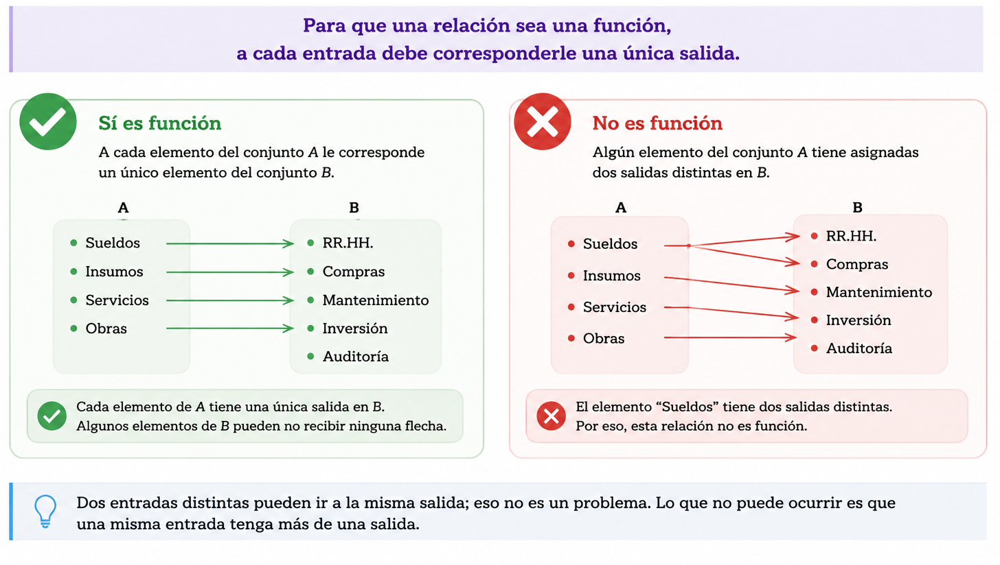
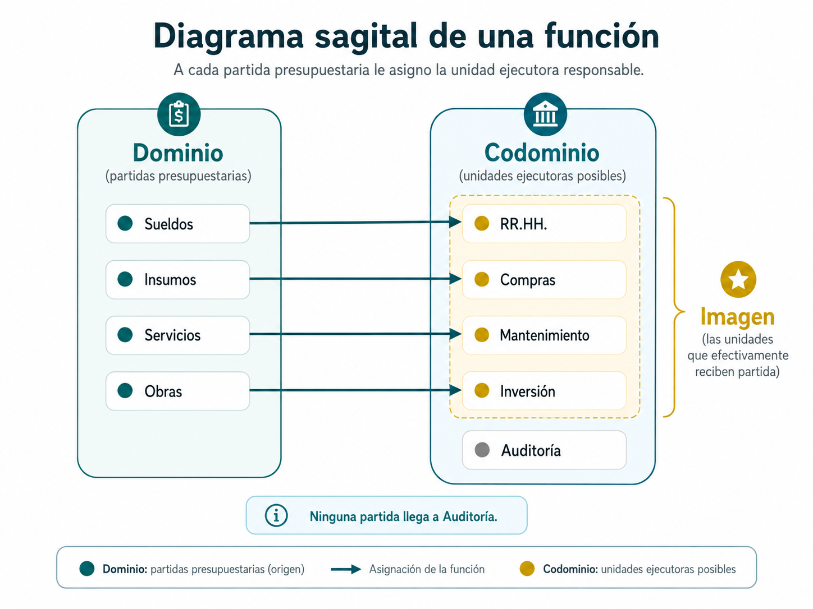
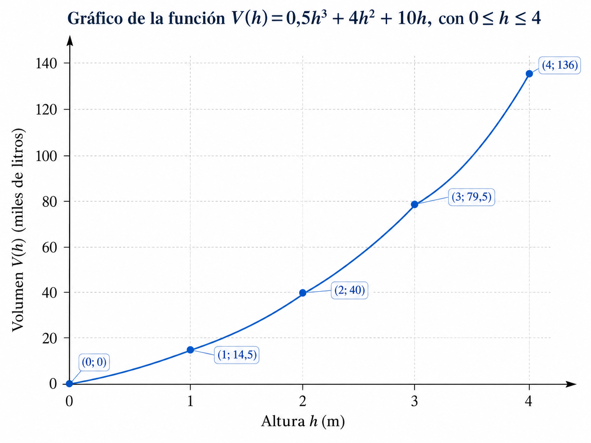
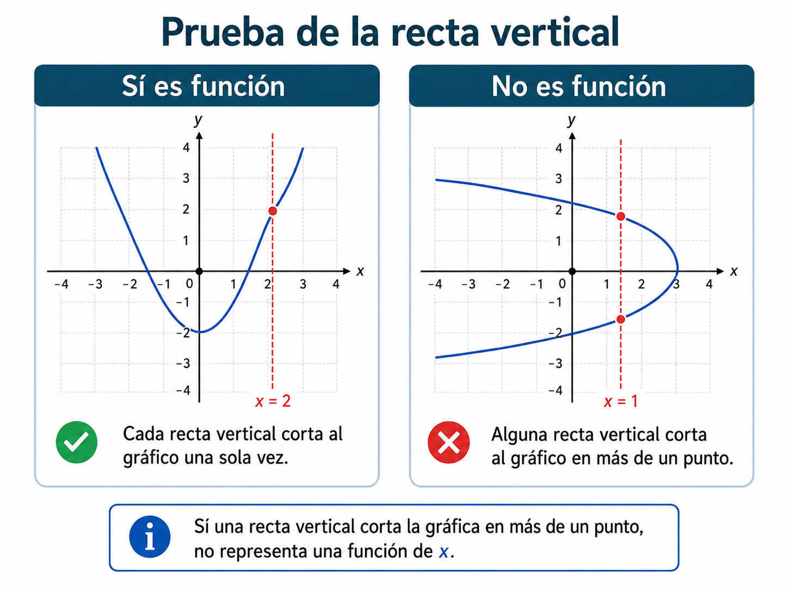
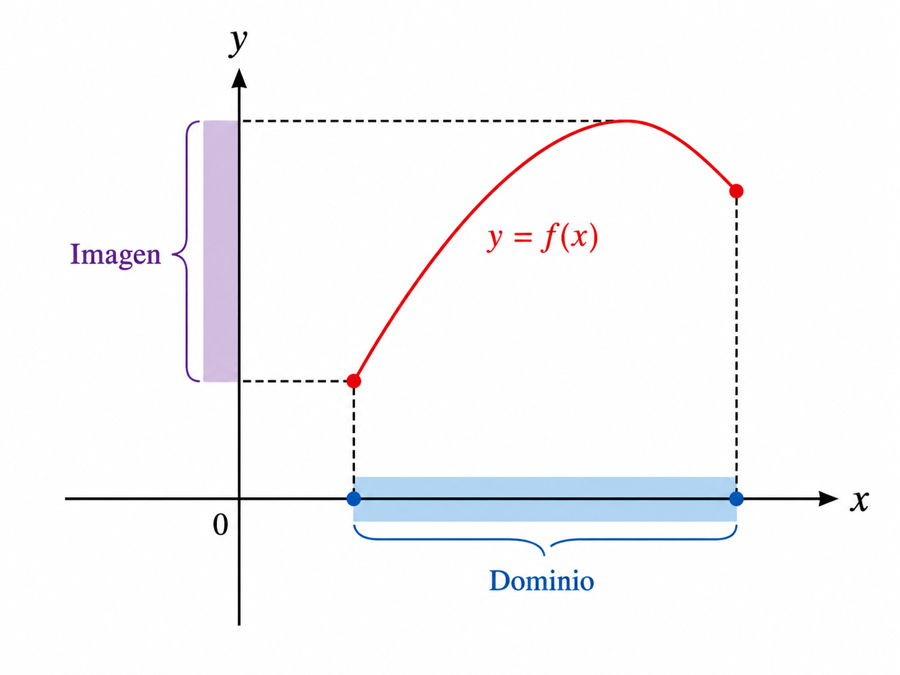
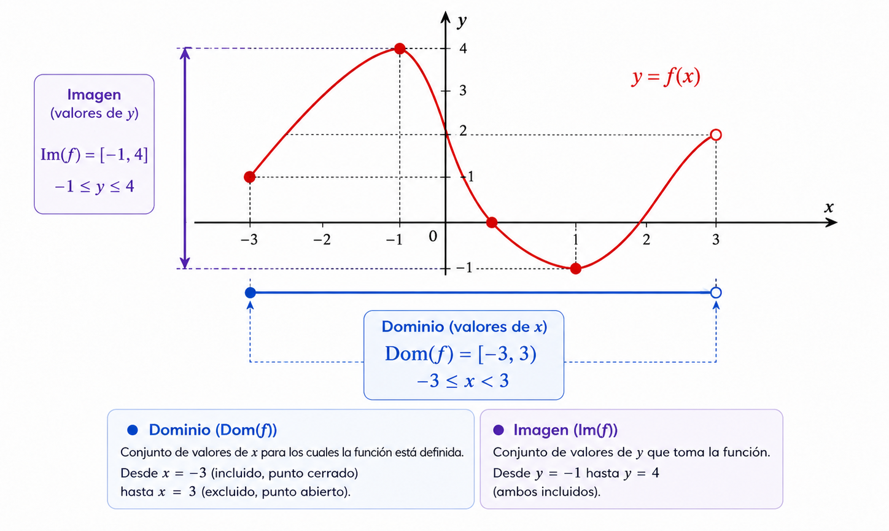
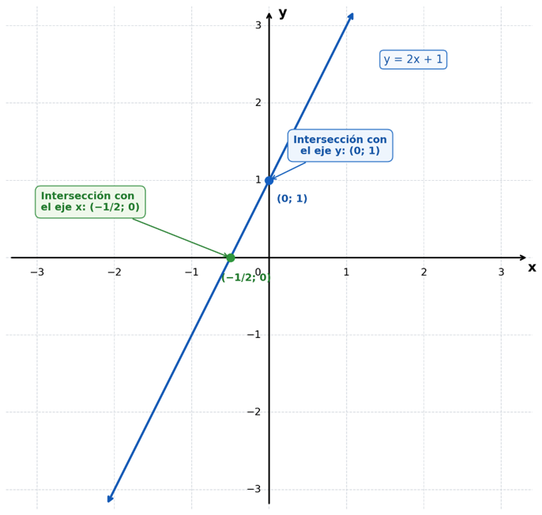
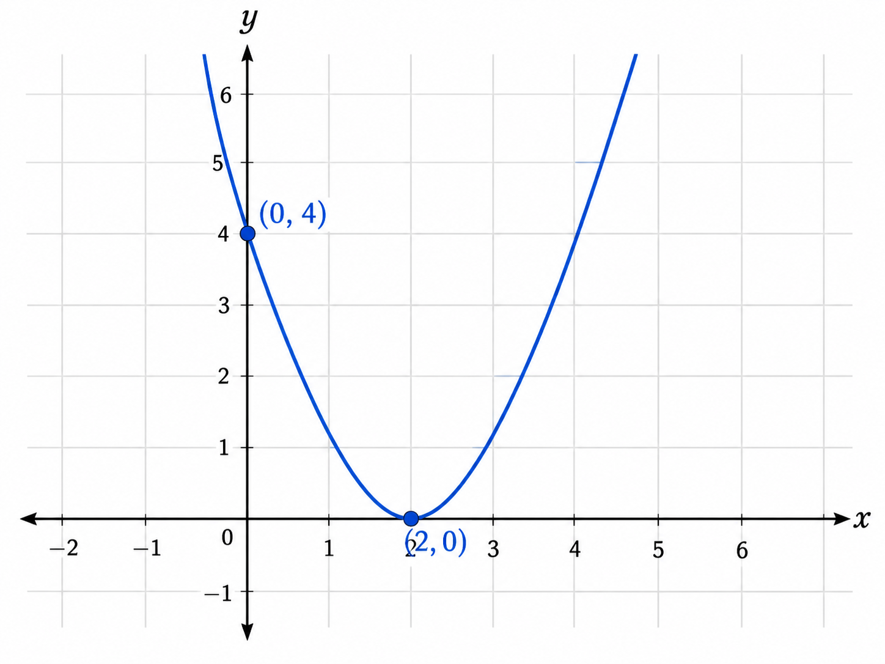
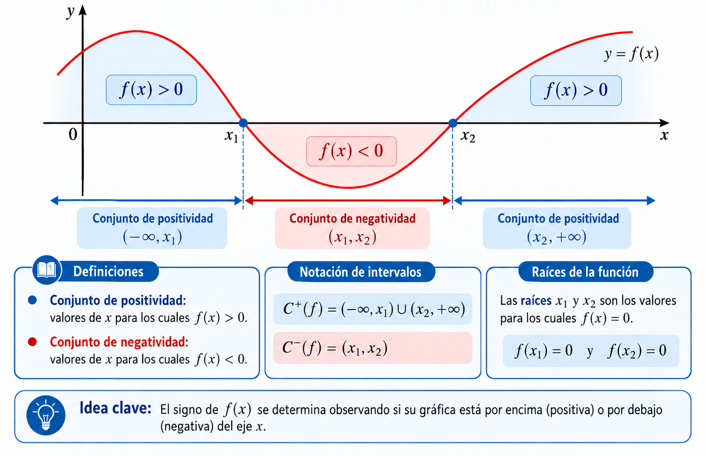
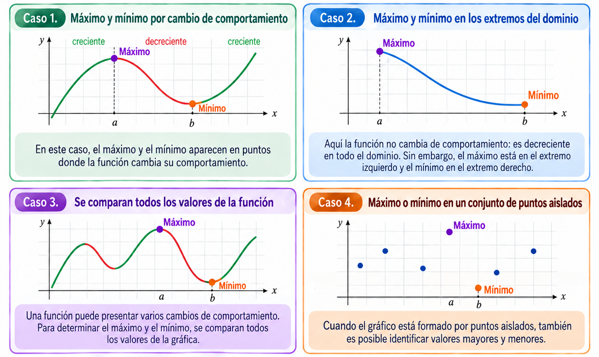

Una relación con una regla especial
En muchas situaciones, un dato se relaciona con otro siguiendo una regla: hay una entrada, una regla de asignación y una salida.
La función como relación entre entradas y salidas
Este video explica qué es una función y sus elementos principales. Mientras lo mirás, prestá atención a la condición que tiene que cumplir cada entrada.
Definición de función
Una función es una relación entre dos conjuntos en la que a cada elemento del conjunto de partida le corresponde un único elemento del conjunto de llegada. Por lo tanto, cada entrada debe tener una y solo una salida.

Dominio, codominio e imagen
| Nombre | Qué es |
|---|---|
| Dominio | el conjunto de entradas (\(A\)) |
| Codominio | el conjunto de salidas posibles (\(B\)) |
| Imagen | el conjunto de salidas que efectivamente son alcanzadas por algún elemento del dominio |
Ejemplo
A cada partida presupuestaria se le asigna la unidad ejecutora responsable: Sueldos, Insumos, Servicios y Obras van, cada una, a una única unidad entre RR.HH., Compras, Mantenimiento e Inversión. Auditoría es una unidad ejecutora posible que no recibe ninguna partida.

El conjunto de partidas es el dominio; el conjunto de todas las unidades ejecutoras posibles (incluida Auditoría) es el codominio; las unidades que efectivamente reciben alguna partida (todas menos Auditoría) forman la imagen.
Idea clave
\(\text{Imagen}\subseteq\text{Codominio}\). El codominio contiene todas las salidas posibles; la imagen contiene únicamente las salidas que la función efectivamente alcanza.
Cuando entrada y salida son números
A partir de ahora trabajamos con funciones numéricas: funciones cuyas entradas y salidas son números reales.
Notación funcional
Cuando las entradas y salidas son números, la función se representa mediante letras.
Se escribe:
Lectura: \(y=f(x)\) se lee "\(y\) es función de \(x\)" o "\(y\) es igual a \(f\) de \(x\)".
| Elemento | Qué representa |
|---|---|
| \(D\) | el dominio: un subconjunto de los números reales |
| \(f\) | la función o regla de asignación |
| \(x\) | la entrada: variable independiente |
| \(f(x)\), o \(y\) | la salida: variable dependiente (su valor depende de \(x\)) |
De la regla a la expresión algebraica
Cuando trabajamos con funciones numéricas, la regla puede expresarse mediante una expresión algebraica.
Ejemplo
La regla es "multiplicar la entrada por 2 y sumar 3".
Multiplicar \(x\) por \(2\) se representa como \(2x\); sumar \(3\) da \(2x+3\). La regla queda expresada como \(f(x)=2x+3\).
Ejemplo
El área de un terreno cuadrado depende de la longitud de su lado, medida en metros.
Variable independiente \(l\): longitud del lado, en metros. Variable dependiente \(A(l)\): área, en \(m^2\). Como el área de un cuadrado es el lado multiplicado por sí mismo: \(A(l)=l^2\).
Dominio de una función numérica
El dominio son los valores de \(x\) para los cuales la función está definida. Hay dos situaciones frecuentes que obligan a restringir el dominio.
| Situación | Restricción |
|---|---|
| Hay una división | el denominador debe ser distinto de cero |
| Hay una raíz cuadrada | el radicando debe ser mayor o igual que cero |
- 1El denominador debe ser distinto de cero: \(x+4\neq0\).
- 2Resolvemos la igualdad que hay que excluir: \(x+4=0\;\Rightarrow\;x=-4\).
- 1El radicando debe ser mayor o igual que cero: \(2x-1\ge0\).
- 2Despejamos \(x\): \(2x\ge1\;\Rightarrow\;x\ge1/2\).
El dominio en una situación real
Cuando una función modela una situación real, el dominio combina dos tipos de restricciones.
| Restricción | Qué considera |
|---|---|
| De la expresión | los valores de \(x\) para los que la fórmula tiene sentido, sin mirar el contexto |
| Del contexto | los valores de \(x\) que además tienen sentido en la situación real |
Ejemplo
El precio \(p\) de un producto y la cantidad demandada \(q\) se relacionan mediante \(p(q)=\dfrac{100}{q}\).
Por la expresión: \(q\neq0\) (no se puede dividir por cero). Por el contexto: \(q\) es una cantidad demandada, así que \(q\ge0\). Combinando ambas: \(\text{Dom}(p)=(0,+\infty)\).
Evaluar una función
Evaluar \(f\) en el valor \(4\) se escribe \(f(4)\) y significa reemplazar la variable independiente por \(4\) en la expresión, y realizar las operaciones.
\(f(x)=\sqrt{x+5}\)
\(f(4)=\sqrt{9}=3\)
\(g(x)=\dfrac{12}{x}\)
\(g(3)=4\)
\(A(l)=l^2\)
\(A(6)=36\)
Tabla de valores
Los resultados se pueden organizar en una tabla de valores: se eligen algunos valores del dominio, se evalúa la función en cada uno, y se registran los resultados. No hace falta usar todos los valores del dominio.
- 1Dominio: \(x+3=0\Rightarrow x=-3\), así que \(\text{Dom}(f)=\mathbb{R}\setminus\{-3\}\).
- 2Elegimos \(x=-9,-6,-1,3,9\) y evaluamos.
| \(x\) | \(f(x)\) |
|---|---|
| \(-9\) | \(3\) |
| \(-6\) | \(4\) |
| \(-1\) | \(-1\) |
| \(3\) | \(1\) |
| \(9\) | \(1,5\) |
Ubicar puntos y leer una función
Para representar una función gráficamente, primero hay que saber ubicar puntos en el plano cartesiano: dos rectas numéricas perpendiculares entre sí.
El plano cartesiano
Mientras mirás el video, fijate cómo se determina en qué dirección moverse para ubicar un punto a partir de sus coordenadas.
| Eje | Nombre | Dirección |
|---|---|---|
| \(x\) | eje de abscisas | horizontal |
| \(y\) | eje de ordenadas | vertical |
Los ejes se cruzan en el origen, \((0;0)\). El plano queda dividido en 4 cuadrantes, numerados en sentido antihorario desde el que tiene ambas coordenadas positivas.
| Cuadrante | Signo de \(x\) | Signo de \(y\) |
|---|---|---|
| I | \(+\) | \(+\) |
| II | \(-\) | \(+\) |
| III | \(-\) | \(-\) |
| IV | \(+\) | \(-\) |
Par ordenado
Cada punto se identifica como \((x;y)\): el primer valor es la abscisa (movimiento horizontal), el segundo es la ordenada (movimiento vertical).
Ejemplo
Ubicar los puntos \(A(3;2)\), \(B(-2;4)\), \(C(-3;-2)\) y \(D(4;-3)\).
\(A\): 3 a la derecha, 2 hacia arriba → cuadrante I. \(B\): 2 a la izquierda, 4 hacia arriba → cuadrante II. \(C\): 3 a la izquierda, 2 hacia abajo → cuadrante III. \(D\): 4 a la derecha, 3 hacia abajo → cuadrante IV.
El gráfico de una función
Definición
El gráfico de una función es el conjunto de todos los puntos \((x;f(x))\) que se obtienen al evaluar la función en cada valor de su dominio.
¿Cómo leer \(f(a)\) para un valor \(a\) del dominio?
| Paso | Qué hacer |
|---|---|
| 1 | localizar \(x=a\) sobre el eje \(x\) |
| 2 | desde ahí, desplazarse verticalmente hasta encontrar el gráfico |
| 3 | leer, sobre el eje \(y\), el valor correspondiente: ese es \(f(a)\) |
Ejemplo
Un reservorio de 4 metros de altura acumula agua según \(V(h)=0,5h^3+4h^2+10h\), con \(V\) en miles de litros y \(h\) la altura del agua en metros.
Dominio: por la expresión, \(h\in\mathbb{R}\); por el contexto, \(0\le h\le4\). \(\text{Dom}(V)=[0,4]\).
| \(h\) (m) | \(V(h)\) (miles de litros) | Par ordenado |
|---|---|---|
| \(0\) | \(0\) | \((0;0)\) |
| \(1\) | \(14,5\) | \((1;14,5)\) |
| \(2\) | \(40\) | \((2;40)\) |
| \(3\) | \(79,5\) | \((3;79,5)\) |
| \(4\) | \(136\) | \((4;136)\) |
Como \(h\) toma cualquier valor entre \(0\) y \(4\), el gráfico se representa con una curva continua.

¿Es función? La prueba de la recta vertical
No toda curva del plano corresponde al gráfico de una función.
Prueba de la recta vertical
Si una recta vertical corta la gráfica en más de un punto, un mismo \(x\) tiene asociados dos o más valores de \(y\): esa gráfica no representa una función. Si toda recta vertical corta la gráfica a lo sumo una vez, sí es función.

Dominio e imagen desde el gráfico
Dominio: los valores de \(x\) efectivamente representados (la "sombra" que el gráfico proyecta sobre el eje \(x\)).
Imagen: los valores de \(y\) que el gráfico efectivamente alcanza (la "sombra" que proyecta sobre el eje \(y\)). Se observa de manera análoga al dominio, pero mirando verticalmente en vez de horizontalmente.

Ejemplo
Un gráfico empieza en un punto cerrado en \(x=-3\) y termina en un punto abierto en \(x=3\); alcanza como valor mínimo \(y=-1\) y como máximo \(y=4\).

Intersecciones, signo y comportamiento
Un gráfico contiene información que se puede leer directamente: dónde cruza los ejes, dónde es positiva o negativa, y cómo cambia su comportamiento.
Intersecciones con los ejes
| Intersección | Cómo se encuentra |
|---|---|
| Con el eje \(y\) | se evalúa en \(x=0\): punto \((0;f(0))\). A \(f(0)\) se lo llama ordenada al origen. |
| Con el eje \(x\) | se busca \(x_0\) tal que \(y=0\) (resolviendo \(f(x)=0\)): punto \((x_0;0)\). A \(x_0\) se lo llama raíz o cero. |
- 1Evaluamos en \(x=0\): \(f(0)=2(0)+1=1\).
- 2Punto de intersección con el eje \(y\): \((0;1)\) — la ordenada al origen es \(1\).
- 3Resolvemos \(f(x)=0\): \(2x+1=0\;\Rightarrow\;x=-1/2\).
- 4Punto de intersección con el eje \(x\): \((-1/2;0)\) — la raíz es \(-1/2\).


Conjunto de positividad y negatividad
Además de dónde cruza los ejes, interesa saber en qué tramos el gráfico está por encima o por debajo del eje \(x\), es decir, dónde la función es positiva o negativa.
Definición
El conjunto de positividad, \(C^+\), son los valores de \(x\) del dominio para los cuales \(f(x)>0\) (el gráfico está por encima del eje \(x\)).
El conjunto de negatividad, \(C^-\), son los valores para los cuales \(f(x)<0\) (el gráfico está por debajo del eje \(x\)).

- 1Para \(x\gt-1/2\) (a la derecha de la raíz), el gráfico está por encima del eje \(x\): ahí \(f(x)\gt0\).
- 2Para \(x\lt-1/2\) (a la izquierda de la raíz), el gráfico está por debajo del eje \(x\): ahí \(f(x)\lt0\).
Crecimiento y decrecimiento
| Clasificación | Definición |
|---|---|
| Función creciente | al aumentar \(x\) en el intervalo, los valores de \(f(x)\) aumentan |
| Función decreciente | al aumentar \(x\) en el intervalo, los valores de \(f(x)\) disminuyen |
| Función constante | al aumentar \(x\) en el intervalo, los valores de \(f(x)\) se mantienen iguales |
Mientras mirás el video, fijate cómo se identifican los intervalos de crecimiento y decrecimiento a partir de un gráfico.
Máximos y mínimos
Al analizar una función, puede interesar identificar el mayor y el menor valor que alcanza en el dominio considerado.
Definición
Una función \(f\) alcanza un máximo absoluto en \(x=a\) si \(f(a)\ge f(x)\) para todo \(x\) del dominio considerado.
De manera análoga, \(f\) alcanza un mínimo absoluto en \(x=b\) si \(f(b)\le f(x)\) para todo \(x\) del dominio considerado.
Veamos algunos casos posibles:

Explorá: analizá un gráfico completo
Ahora que viste cada concepto por separado, probá identificarlos todos juntos sobre una misma curva.